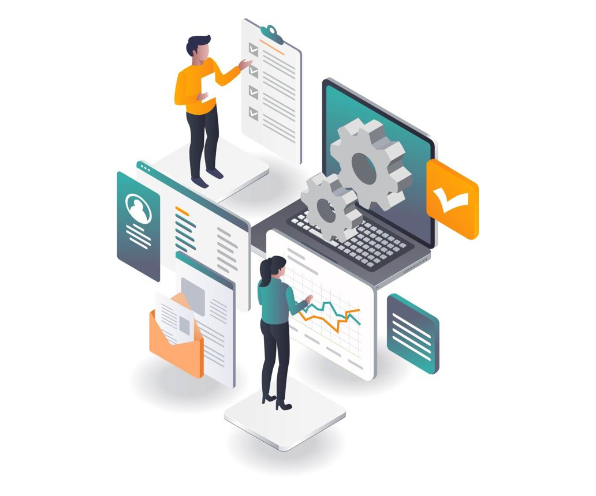

We provide customized TDL solutions to extend the power of TallyPrime. Our services are designed to automate business processes, improve productivity, and deliver solutions tailored to your unique business requirements.

Customized Tally solutions developed to match your unique business requirements and workflows.
Design custom invoices, MIS reports, dashboards, and business-specific print formats.
Automate approvals, alerts, workflows, data validations, and routine business operations within Tally.
Seamlessly connect TallyPrime with third-party applications such as WhatsApp, SMS gateways, Barcode systems, Excel, SQL databases, and other business software to streamline operations and improve data flow.